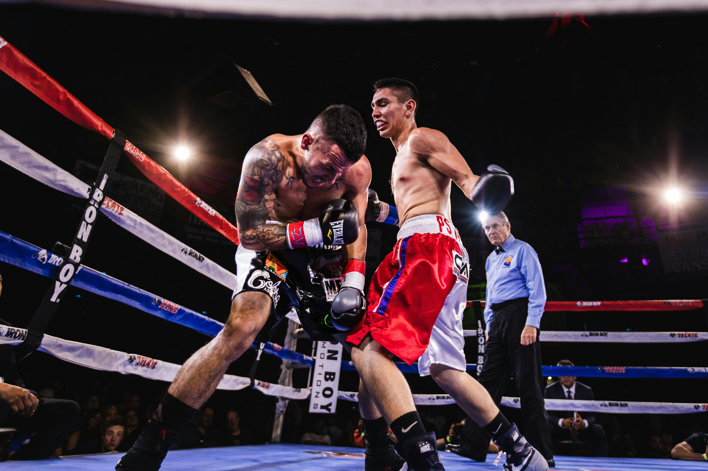

Boxeo
El boxeo es un deporte de contacto en el que dos oponentes, normalmente con guantes protectores, se lanzan puñetazos durante un tiempo predeterminado en un ring de boxeo. El objetivo es lanzar golpes sobre el oponente y evitar ser golpeado . El deporte es puntuado por un grupo de jueces que determina el ganador según la cantidad de golpes recibidos, el poder y la precisión de los golpes y la estrategia general utilizada en la pelea.
Los 5 mejores boxeadores de los últimos 50 años según The Ring (1996):| POSICIÓN |
NOMBRE |
RECORD |
PAÍS |
| 1 |
Sugar Ray Robinson |
173–19–6 (108 KO) |
Estados Unidos |
| 2 |
Muhammad Ali |
56–5–0 (37 KO) |
Estados Unidos |
| 3 |
Roberto Durán |
103–16–0 (70 KO) |
Panamá |
| 4 |
Willie Pep |
229–11–1 (65 KO) |
Estados Unidos |
| 5 |
Sugar Ray Leonard |
36–3–1 (25 KO) |
Estados Unidos |
Los entrenadores Históricos Más
Influyentes de la historia de boxeo:
- Cus D'Amato: Revolucionario por su estilo peek-a-boo y enfoque psicológico.
- Emanuel Steward: Famoso por el Kronk Gym y entrenar a figuras como Lennox Lewis y Thomas Hearns.
- Freddie Roach: Célebre por el Wild Card Gym y su trabajo con Manny Pacquiao.
- Eddie Futch: Mente brillante detrás de grandes boxeadores, incluyendo a Joe Frazier y Larry Holmes.
- Nacho Beristáin: Leyenda mexicana, formador de múltiples
campeones en el gimnasio Romanza.



Créditos de la imagen:
https://www.pexels.com/es-es/foto/foto-de-angulo-bajo-de-dos-hombres-peleando-en-el-ring-de-boxeo-2600493/